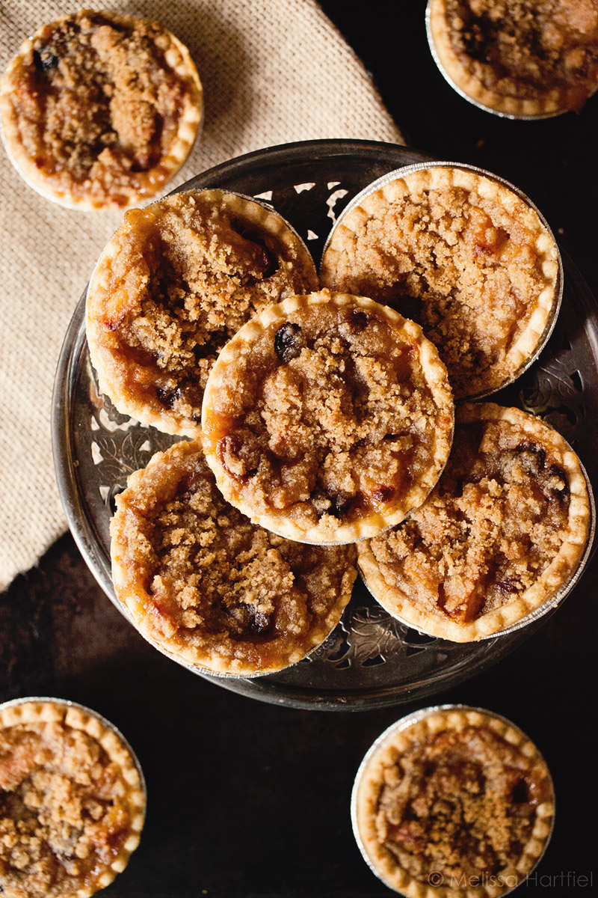

Raisin Tarts

Delightfully spiced tarts with a moutherwatering crust
These raisin tarts are courtesy of my Great Gramma Hartley and have been another
Christmas Eve tradition in my family for generations. Even "raisin haters"
have been known to love these tarts!
Ingredients
- 2 eggs
- 1 cup sugar
- 1/8 lb. melted butter
- 1 cup cooked seedless raisins
- 1/2 tsp cinnamon
- 2 tsp vanilla
- 1/4 tsp almond flavoring
- 1/2 cup chopped walnuts
- pre-made pie crust
Steps
- Spray 2 muffin pans.
- Cook raisins until the water has boiled almost away as no juice should be added to the filling.
- Mix all ingredients in order given
- Use 2 ¾ inch cutter or whatever size works best for your muffin tins
- Place spoonful in uncooked tart shells.
- Bake at 375 degrees Fahrenheit for about 20 minutes
- Note: Crust should only come 1/2 way (or less) up the inside of the muffin tins